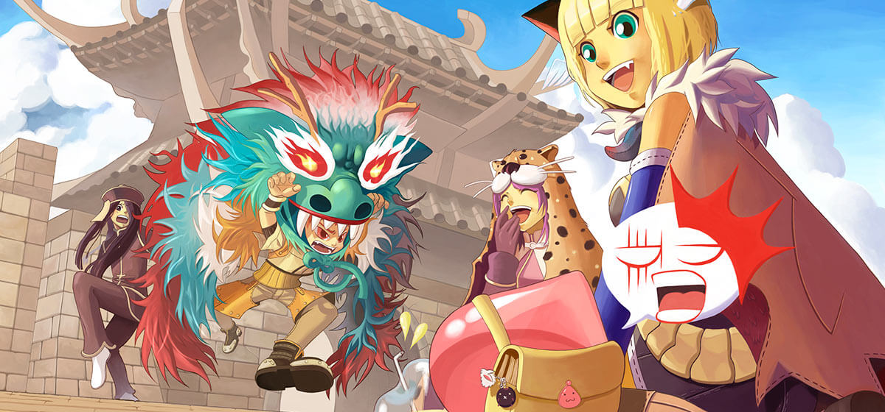

Descubra seu caminho
Descubra seu caminho
O QUE É RAGNARÖK ONLINE?

Ragnarök Online é um jogo online gratuito distribuído pela WarpPotal Brasil que você pode
instalar no seu computador e jogar ao lado de milhares de outros jogadores conectados pela
internet. Classificado como um jogo de MMORPG, ele se baseia justamente nos elementos de fantasia
medieval para criar um universo de aventuras fictícias no qual você pode construir vários heróis
e evolui-los da forma como achar melhor!
No Rag, como a maioria dos jogadores o chamam, você poderá jogar de graça num mundo que mistura
elementos de fantasia medieval, mitologia nórdica e cultura oriental – já que o jogo foi
desenvolvido na Coréia do Sul. Inclusive, sabia que antes de virar um jogo online, o Rag era um
“manwha”? E caso esteja se perguntando “O que diacho é uma manwha?”, esse é o nome dado aos
quadrinhos coreanos (tipo os mangás japoneses).
Voltando ao jogo, nele você poderá criar vários personagens, escolhendo entre diversas classes
para sair explorando o mundo de Rune-Midgard enquanto caça monstros e completa missões
(as famosas “quests”). O legal é que, por se tratar de um MMO, você poderá criar grupos, formar
clãs, trocar itens ou simplesmente se divertir num bate-papo – tudo ao lado de outros jogadores.
Inclusive, um dos elementos mais marcantes do jogo é a Guerra do Emperium, uma gigantesca guerra
PvP entre os clãs, na qual os jogadores disputam a posse de castelos para obter seus tesouros.
Tudo isso está ao seu alcance. E o melhor: de graça! No Ragnarök da Warp Portal, você encontrará
dois servidores: Thor, o servidor de acesso totalmente gratuito e Valhalla, o servidor premium que
conta com algumas vantagens e, portanto, requer que você compre um passe de acesso apenas uma vez
para ser acessado. Ragnarök possui, sim, a opção de créditos eletrônicos, assim como a maioria dos
jogos hoje em dia. Mas o legal é que é totalmente possível jogar sem eles, já que os jogadores podem
trocar ou negociar quase todos os itens entre si usando a moeda obtida dentro do jogo.
Tá esperando o que para baixar o jogo e experimentar o MMORPG mais clássico do Brasil? Venha viver
aventuras fantásticas aqui com a gente!
Conheça mais sobre Ragnarök
Ragnarök Online é um MMORPG criado pela Gravity e mistura mitologia nórdica com um toque oriental. Aqui,
você encontra um universo no qual pode interagir com milhares de jogadores em tempo real! Esse é o elemento principal para
fazer com que sua jogabilidade seja completamente imprevisível e extremamente dinâmica.
Neste jogo, suas conquistas não têm limites! Experimente fundar um clã e ajude seus colegas a conquistar um castelo; ou, então,
crie uma espada poderosa para que outros jogadores venham à sua procura, em busca de novas armas. A melhor parte é que não existe
um final definitivo: em Ragnarök Online, quem decide seu destino é você!
Você pode usar as ferramentas de bate-papo e emoticons para começar conversas e criar grupos com outros jogadores,
para que um possa ajudar o outro a completar desafios mais difíceis. Para derrotar monstros mais poderosos, não hesite em criar
um grupo de caça! E Você ainda pode entrar em um clã e participar de grandes guerras - nada se compara à emoção de um confronto
para unir seus membros! E estes são só alguns dos diferenciais dos MMORPG que você encontra em Ragnarök!
soundtrack do site